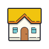

Contact Info
Phone
+852 6333 0879
+44 7594 721787
twk219@ic.ac.uk
kotszwang@gmail.com

Passionate in the progresso of technologies, I have experienced different field of work to understand various technological frontiers These experiences has been a guiding stone to building who I am and what I want to be.
As an ISP engineer, I have built drivers for embedded applications including and not limited to image quality control.
Through this experience, I have learnt to maintainhost and build environment, as well as methods to comply withto coding standards such as that of the SEI CERT C Coding Standard.
• Automated SLA adherence checks with an algorithm based on statistical analysis of existing database
• Prototyped websites and applications with improved UI to streamline incident report processes
• Configured Geo-SiG accelerometer for deployment with Putty using proprietary programming language
• Streamlined accuracy analysis of Cross-Hole Analyzer by filtering 99% of logged data using C++
• Conducted performance tests on bone conduction telecom product (OFLO) and smart ring (ORII)
• Increased battery life of OFLO by 50% through discovery of unnecessary CPU usage in logged data
• On-field debugging and configuring OFLO for deployment at Luxury Hotel the HARI Hong Kong
• Optimized power efficiency of ORII by reconfiguring actuator towards the axis of sound propagation
Ever thought of the hassle of bring a big keyboard around? Worry not, in this project I have collaborated with engineers to create a keyboard, each contining an octave, that can be pieced together to complete a piano keyboard.
In this project, I collaborated with electrical engineering students to build an autonomous Mars exploration rover. In Particular, I developed the vision to detect surrounding-coloured objects and provide coordinates to the rover. To make sure the images are processed just in time, I applied gaussian filter in hardware using Verilog, and RGB to HSV conversion in software using C
Mining is one of the world's deadliest industry. Breathing deadly gas, dangerously high temperature, lack of oxygen all cortributes to poor health conditions. The canary is a network of devices created over MQTT network to communicate the air quality condition around miners, so that miners can feel safe and do what they do best.
Hey there! Hope you enjoyed the website I made : )
So, more about me. I am half workaholic, half procrastinator. It's a wierd one, like I procrastinate, but when I do need to work, I can work as long as I am needed hahaha. To me what is the most important, is
how my friends, the people around me feel. Most of them really like smartphones, electronics, and so it is my dream to create a product that can bring smile to people's faces : )))
But for now, let me be a classical nerd and share with you some classical music I absolutely adore. I am a great avocate for classical music, tho to be precise, I love romantic period music more.
Checkout the playlist I have included below!